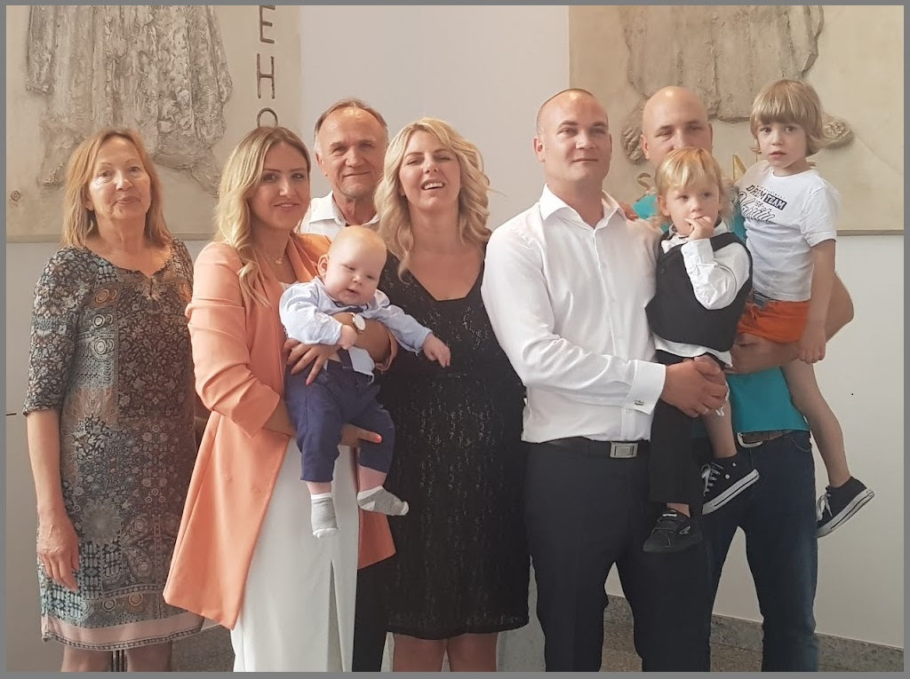
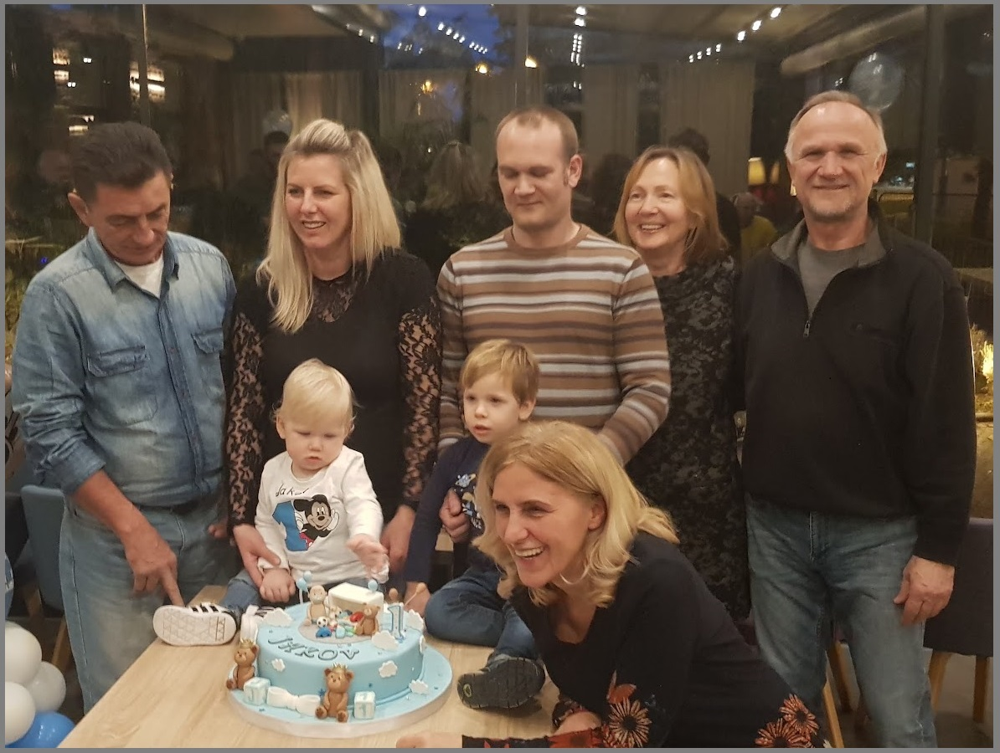
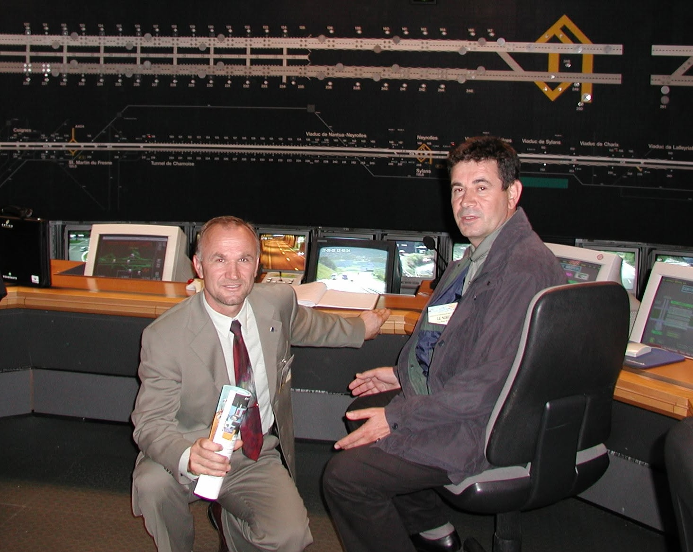
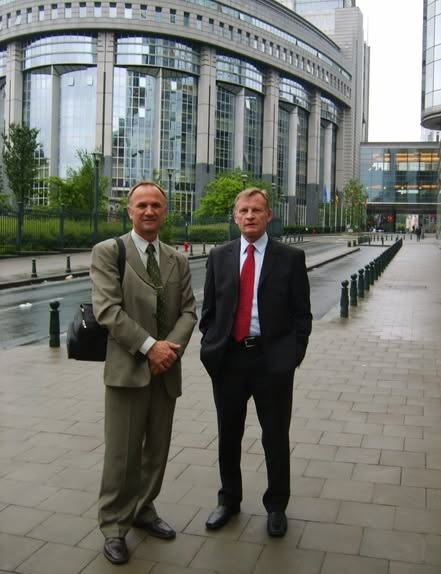

About the Author
Personal Introduction
Dear visitor, welcome to the web pages dedicated to the history, origin and heritage of the surname Tandara.
My name is Jure Tandara, a road traffic engineer. I am 70 years old and have been retired for six years. I live in Zagreb with my wife Ruža, I am the father of two sons — Ivica Julio and Marin Tin — and the grandfather of five grandchildren: Vigo, David, Jakov, Kaia and Laura.
After a long working life, today I dedicate myself to my family, to researching our roots, and to everything that connects me with nature and creativity.


Professional Career
I began my professional career as the Head of the Croatian Railways Rolling Stock Repair and Maintenance Facility in Zagreb, where I was responsible for the organisation, supervision and quality of maintenance, as well as for the reliability of the railway fleet. This first appointment provided me with a strong technical and organisational foundation for my future work in the field of transport systems.
I then worked as the Head of the Container Terminal in Zagreb, where I was responsible for managing terminal operations, organising freight flows and coordinating logistics processes.
Afterwards, I assumed the position of Head of the Traffic Safety Department at the Rijeka–Zagreb Motorway. Together with my colleague, the Head of the Maintenance Department, Mr Dinko Pešut, we laid the foundations of a modern motorway maintenance and traffic safety management system, the first of its kind in the Republic of Croatia.
Our work was recognised by the European Commission, which awarded the Tuhobić Tunnel the distinction of being the safest tunnel in Europe in 2009, as the tunnel that achieved the greatest improvement in safety after receiving a poor rating during the first European tunnel safety assessment in 2004.
An important part of my professional career was also the management of the implementation project of the RDS–TMC traffic information system in the Republic of Croatia. This project established the foundations of modern traffic information services and enabled the integration of Croatian road traffic information into the European dynamic traffic management network.


Sport and Technical Creativity
Alongside my professional career, I devoted a significant part of my life to sport and technical creativity. I hold a black belt in karate and was a former member of the national team of Karate Club Tempo. For many years I was also actively involved in skiing, mountaineering and cycling.
I found particular enjoyment in building models of historic ships, replicas of Roman and ancient military machines, as well as handcrafted wooden toys for my grandchildren.
Family and Everyday Life
Today I find the greatest joy in nature and in spending time with my grandchildren, creating memories that will outlive generations. My family, my children, grandchildren and friends remain my greatest source of inspiration and happiness in life.
About the Project
The Digital Archive of the Tandara Family Line grew from a simple but demanding wish: to gather what can still be found, connect scattered family traces, and preserve them before time, fading memory and the passing of generations make them inaccessible. Behind the pages, names, dates, photographs and genealogical links lie many months of research, verification, correspondence, conversations and repeated attempts to reach people who might add what written sources can no longer tell us.
During this work it became clear that the search for one’s own roots does not awaken the same interest in everyone. Some people, with a sincere desire to cooperate, shared family information, memories and photographs. Others showed little interest in the project, while some made the sharing or publication of information subject to various conditions. Requests were sent to certain addresses more than once, yet no reply has been received to this day. The relatively small number of people willing to take an active part in the research was one of the unexpected realities of creating this archive.
There is a paradox in our time: we have never had more ways to communicate, yet in some cases it is harder to reach a person than it was several decades ago. Many members of my generation and older generations do not use social networks or newer forms of digital communication regularly. Others do not accept messages from people they do not know, so establishing a first contact can be almost impossible. Younger generations, although much easier to reach through technology, are often not yet interested in genealogy or family history. Between these two generational realities lies a space in which valuable information can disappear before anyone records it.
For that reason, this project could never be merely a transcription of existing genealogies. Sources had to be compared, confirmations sought, inconsistencies recognised, family branches connected and, wherever possible, descendants contacted directly. Where no answer was available, a gap was left. Such gaps have not been filled with assumptions simply to make the genealogy appear complete. It is better to leave a question open than to hand future generations a well-presented but inaccurate story.
The entire project has been created on a voluntary basis and without commercial purpose. It has required months of work, personal time, personal expense and a great deal of patience. The value of such work is difficult to express in hours, because most of the effort was not spent on what can now be seen on the screen, but on everything that came before it: searching, checking, comparing, correcting and searching again.
All of this has been done with the thought that the archive may not mean the same thing to everyone today, but that one day it may become invaluable to someone. A future descendant searching for the name of a grandfather, great-grandfather or ancestral village may find here the thread that connects them with people who lived long before them. If that happens, the purpose of the work invested in this project will have been fulfilled.
Genealogy is more than a sequence of names and dates. It reminds us that none of us begins with ourselves. Behind each of us stand generations of people whose lives, work, decisions, migrations, hardships and families made our own existence possible. Preserving their memory is not merely an interest in the past; it is also a form of respect for the inheritance we have received.
For this reason, the archive should not be regarded as a finished work. The genealogy of a living family line is never truly complete. New generations are born, new families are formed, places of residence change, new documents are discovered and older information is corrected. If the project is to retain lasting value, it will need to be continually updated and expanded even after its initial completion.
One of the author’s greatest wishes, therefore, is not only that the archive should survive, but that people will eventually be found who consider it valuable enough to continue it. A project of this kind can outlive its founder only when someone else recognises its meaning, accepts responsibility for preserving it and continues where the previous generation left off.
If this archive one day encourages even a few people to ask their parents and grandparents about family stories while they can still hear them, to preserve an old photograph instead of discarding it, or to write down a name that would otherwise be forgotten, it will already have fulfilled an important part of its purpose.
Our heritage is not only what we have received from our ancestors. It is also what we manage to preserve from it for those who come after us.
Editorial principles of the project
Each part of the archive has a clearly defined role. Origin presents the historical background of the surname, Genealogy focuses on family relationships and generations, Migration follows the movement of individual branches, while Curiosities explores the broader linguistic and cultural context of the name Tandara. This avoids unnecessary repetition and allows the same subject to be viewed from the perspective most appropriate to each page.
Documented information is given priority. When direct confirmation is lacking, interpretations are identified as possible or probable, and open questions remain clearly separated from established facts. Interactive diagrams provide an overview of family relationships, while the accompanying text supplies historical and research context.
The website is primarily intended for use on a laptop or desktop computer because the family trees and graphic displays contain a large amount of detail. The content remains accessible on smaller screens, but a larger display is more practical for viewing complex diagrams in full.
Public and private information
Respect for privacy is an integral part of editing the archive. The About the Author page therefore does not repeat age thresholds, publication criteria or access rules; all such rules are consolidated in one place, the Privacy Policy.
Additions, corrections and requests concerning family information are handled through the Contact & Collaboration page so that each change has a clear source and can be checked before it is incorporated into the archive.
Sources and development of the archive
The family trees and information published on these pages are the result of many years of work with parish archives, civil registers, historical sources, archival material and testimonies from family members. Each new item is compared with the existing structure of the family line before it becomes part of the public display.
As part of the project’s future development, T‑shirts of various sizes will be produced featuring the homepage logo — the family tree with its four main branches and the diagram of the earliest Tandara families. Since the entire project is funded exclusively from my pension, the number of T‑shirts will be limited. Several pieces will be gifted to the first or most notable members of our family, those who will proudly wear the surname on their chest.
If there is interest in creating a wall poster — either as a decorative piece or a large wall map — please contact me using the information provided on the site. I will gladly consider the possibilities and arrange details with anyone who wishes to have such a visual representation of our family history.
Acknowledgements
This digital archive would never have come into existence without the people whose knowledge, dedication and love for our family heritage laid its solid foundations.
I owe special gratitude to my cousin and friend Vice Tandara, whose enthusiasm and vision inspired the creation of the publication "Genealogy of the Tandara Clan". His idea of researching, preserving and permanently recording the history of our family line marked the beginning of a project that has left a lasting legacy for future generations.
I also extend my sincere and heartfelt gratitude to our mutual friend Milan Lažeta, the author of the publication "Genealogy of the Tandara Clan". For many years he devoted himself to researching church and state archives, parish registers and numerous historical sources, patiently collecting and connecting information about the many branches and lineages of the large Tandara family. The result of his many years of work is this exceptionally valuable publication, which represents an invaluable contribution to preserving the history and heritage of our family line.
The publication "Genealogy of the Tandara Clan" forms the foundation and principal source of information upon which this digital archive has been built. Without the vision of Vice Tandara and the dedicated research of Milan Lažeta, this project would never have been possible.
To both of them I express my heartfelt gratitude and deepest respect for their immeasurable contribution to preserving the shared heritage of the Tandara family.
Jure Tandara